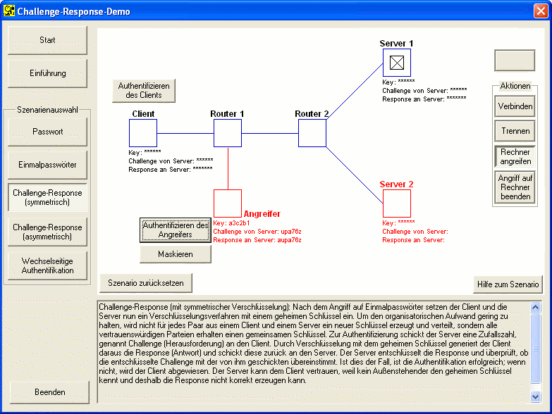

Diese Lösung zielt darauf, dass alle Kommunikationspartner, also Server 1, Server 2 und Client denselben symmetrischen Schlüssel verwenden. Ist nun einer der Kommunikationspartner nicht vertrauenswürdig oder angreifbar, so ist die gesamte Kommunikation innerhalb der drei Parteien kompromittiert.
Dies ist ein spezifisches Problem beim Einsatz symmetrischer Kryptographie. In unserem Fall reicht es also aus, den geheimen Schlüssel unautorisiert von einem der Server auszulesen, um sich bei allen anderen Servern auch authentifizieren zu können. Im Szenario gehen Sie wie folgt vor:
